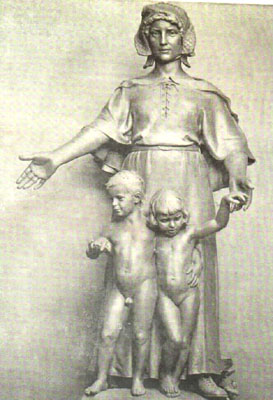

|  |
|
Charles Grafly, Pioneer Mother Monument. Bronze, exhibited
at the Panama-Pacific International Exposition, San Francisco,
1915. From: Stella G.S. Perry, The Sculpture and Murals
of the Panama-Pacific International Exposition (San Francisco:
The Wahlgreen Company, 1915).
|